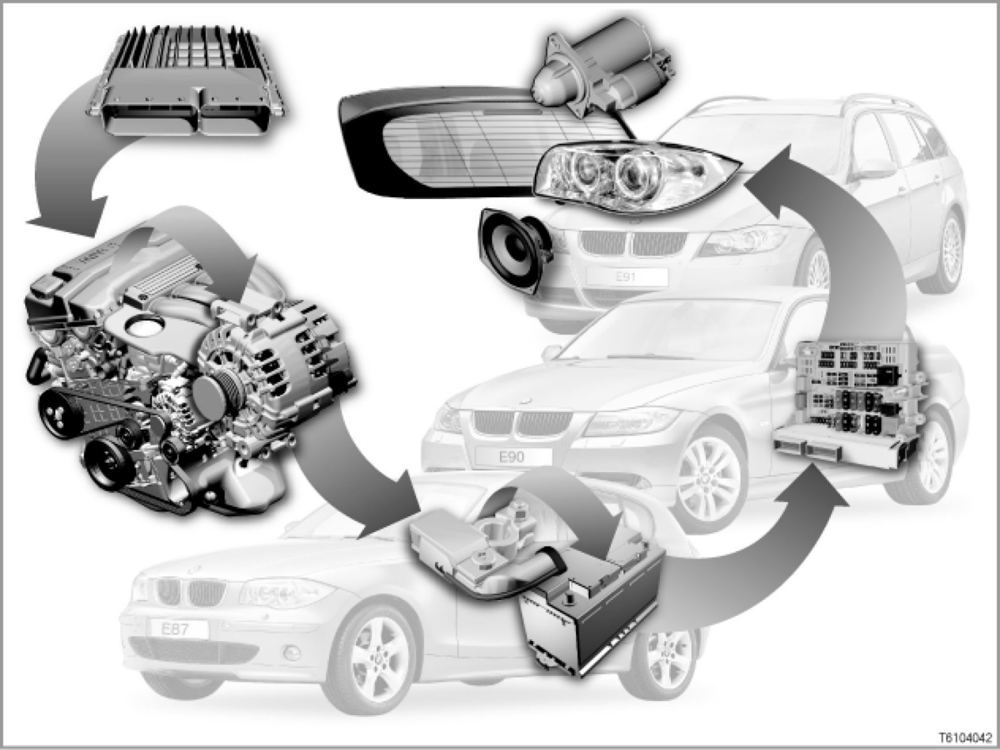

61 03 04 (092) Power Supply
61 03 04 (092)
Power supply
E81, E82, E87, E88, E90, E91, E92, E93

Introduction
A network of hardware and software guarantees the power supply for vehicle systems. Two software functions are of fundamental importance for the power supply:
1. Energy management
2. Power management
The energy management system ensures that sufficient starting power is always available.
The energy management system monitors the vehicle even when the engine is not running.
The energy management system comprises all vehicle components that generate, store and consume energy.
The data for the energy management system are divided among several control units.
The power management system is a subsystem of the energy management system. Power management is controlled by the engine control unit (DME or DDE: digital engine electronics or digital diesel electronics).
While the vehicle is being driven, the power management system regulates the output of the alternator and the battery charge.
System overview: control units on terminal ...
> - E87, E90, E91 up to 09/2005
> - E87, E90, E91, E92 from 09/2005 until 03/2007
E81, E87, E90, E91, E92, E93 from 03/2007 until 09/2007
E81, E82, E87, E88, E90, E91, E92, E93 from 09/2007
Brief description of components
The following components are involved in the power supply:
- Alternator
The alternator generates the charge voltage for the battery and the power supply for the consumers. The alternator generates a variable voltage, depending on the engine speed (alternator voltage).
The power management system regulates this variable voltage.
- Battery
The vehicle battery is fitted inside a plastic casing in the luggage compartment. The capacity of the battery installed depends on the engine used and the equipment installed in the vehicle.
- Junction box
The junction box is fitted behind the glove box underneath the instrument panel.
The junction box consists of a power distributor and a control unit, the junction box electronics (JBE, see below).
The power distributor holds fuses and relays. The following relays are of particular importance for the power supply:
- Terminal 15 relay
- Terminal 30g relay for consumer cutoff (see below under "System functions")
- Terminal 30g-f relay for cutoff in case of fault (see below under "System functions")
Note: For current details about the pin assignment and fuse assignment of the junction box electronics and the power distributor, please refer to the BMW diagnosis system
Different versions of the power distributor are fitted, depending on the model series and Model Year measures. For example, the complete fuse assignment may change as part of Model Year measures.
- 03/2007 Model Year change:
primarily changes to pin assignment
- 09/2007 Model Year change:
primarily changes to fuse assignment
Depending on the vehicle equipment, various relays are mounted on the boards in the power distributor.
- Front and rear power distributors
The BMW 1-Series and the BMW 3-Series have the following power distributors:
1. Power distributor in the engine compartment: Electronics box
2. Power distributor in the luggage compartment: Rear fuse block
The fuse block is secured to the vehicle battery by a retaining clip.
The fuse block can only be replaced as a complete unit. Fuses cannot be replaced individually.
The fuse block holds the fuses for the following consumers:
- Valvetronic
- Common rail (fuel injection on diesel)
- Electric auxiliary heater
- Power distributor in junction box
- Intelligent battery sensor
> Only on vehicles with High equipment level, e.g. CCC or M-ASK (CCC: Car Communication Computer, M-ASK: Multi-audio system controller)
The intelligent battery sensor evaluates the current quality of the battery. The intelligent battery sensor is a part of the battery negative terminal.
The intelligent battery sensor regularly (cyclically) measures the following values:
- Battery voltage
- Charge current
- Discharge current
- Battery temperature
The following control units are involved in the power supply:
- JBE: Junction box electronics
The JBE is the control unit in the junction box.
The JBE is the central data interface in the vehicle (gateway for the bus systems).
[for further information, please refer to SI Technology (SBT) 61 05 04 095] Description and Operation
- CAS: Car Access System
The Car Access System is involved in the terminal control (terminal R, terminal 15, terminal 30g).
The terminal control supplies important messages for the power supply.
The CAS is connected to the following components and control units:
- The Car Access System is connected by a direct wire to the START/STOP button and to the slot for the ID transmitter.
The START/STOP button and the slot are located next to the steering column.
- The starter motor and the DME / DDE are connected to the CAS.
The CAS control unit is a bus subscriber on the K-CAN.
[for further information, please refer to SI Technology (SBT) 61 03 03 019]
- DME: Digital engine electronics or
DDE: Digital diesel electronics
The DME/DDE influences the power supply as follows: If the alternator voltage drops, the DME/DDE will increase the engine speed as needed.
The software for this is called "power management".
The DME/DDE is connected to the PT-CAN (Powertrain Controller Area Network) as part of the bus system.
If an intelligent battery sensor is fitted, the DME / DDE will evaluate the current battery condition. In this way, the DME / DDE also influences terminal 30g-f (see below under "System functions").
[more in Technical Service Information (SBT) 11 01 04 068]
[for further information, please refer to SI Technology (SBT) 11 06 04 117]
- MRS: Multiple restraint system
The MRS control unit interrupts the power supply as follows if an accident exceeding a certain severity occurs:
- The safety battery terminal is separated from the battery.
- The electric fuel pump is switched off.
[more in SI Technical (SBT) 65 04 04 099]
[more in Technical Service Information (SBT) 65 05 05 138]
The following data buses and wires are important for the power supply:
- Bitserial data interface
The bitserial data interface is the data connection between the engine control unit (DME/DDE) and the alternator.
- 2 battery cables
2 battery cables connect the battery to the engine compartment:
- One of the battery cables runs via the jump-start connection point to the starter and alternator.
- The other cable is used for the voltage supply for the fuel injection system (on spark-ignition engines: Valvetronic, on diesel engines: Common rail system).
Both battery cables are routed on the vehicle underbody on the BMW 1-Series and BMW 3-Series.
System functions
The following system functions of the power supply system are described:
- Power management with engine running:
"Basic Power Management" functions with standard equipment and "Advanced Power Management" with High equipment level
- Emergency operation in the event of bitserial data interface failure
- Energy management even when engine is not running:
Power supply for control units, consumer cutoff of auxiliary consumers and off-load current monitoring
- Data transfer for power supply
Power management
The power management system is the most important component of the energy management system.
The power management system is a software package in the engine control unit (DME or DDE).
When the engine is running, the power management system regulates the alternator voltage.
Depending on the vehicle's equipment, there are 2 versions of the power management:
- Basic Power Management (BPM)
> on vehicles with standard equipment and only a few items of special equipment
Basic Power Management controls the idle speed.
Basic Power Management also specifies the charge voltage according to demand.
- Advanced Power Management (APM)
> on vehicles with High equipment level, e.g. with the following items of special equipment:
- CCC: Car Communication Computer
- M-ASK: Multi-audio system controller
- BMW "Professional" radio in US version
- Telephone in US version.
Advanced Power Management is only available with the intelligent battery sensor. Advanced Power Management gives precise consideration to the current battery condition: The intelligent battery sensor reads the corresponding data.
When the engine is running, the power management system regulates the following:
- Alternator voltage regulation
When the engine is running, the alternator generates a variable voltage, the alternator voltage.
This variable alternator voltage is regulated by the power management according to the following criteria:
- Nominal value for alternator voltage:
The respective nominal value for alternator voltage depends on how many electrical consumers are switched on.
- Battery temperature:
To prevent the battery from overheating, the optimum charge voltage is regulated.
The alternator voltage is regulated by the engine control unit (DME or DDE).
The alternator should always deliver as much current as the electrical consumers need.
The engine control unit adapts the alternator voltage as follows, depending on the consumers in use:
- By increasing engine speed
- By increasing excitation current to alternator coils
The data is exchanged via the bitserial data interface.
- Battery charging regulation
On vehicles without intelligent battery sensor, the battery temperature (for example) is calculated.
On vehicles with intelligent battery sensor, the battery condition is recorded precisely by the intelligent battery sensor.
- Load-dependent reduction of some consumers
> Only on vehicles with High equipment level and intelligent battery sensor
On vehicles with intelligent battery sensor, consumers may be reduced or even switched off altogether, even if the engine is running.
This consumer cutoff reduces current consumption in critical situations.
This ensures that the battery is not discharged.
The affected consumers are either switched off completely of their power output is reduced.
On vehicles with diesel engine, the power consumption of the electric auxiliary heater is regulated.
Emergency operation in the event of bitserial data interface failure
If the bitserial data interface between the engine control unit and the alternator is interrupted, the alternator voltage will be regulated to a constant 14.3 V.
Energy management system
The energy management system is software package in several control units, e.g.:
- CAS: Car Access System
- JBE: Junction Box Electronics
- Engine control unit: DME or DDE).
The energy management system monitors and regulates the power supply, even when the engine is not running.
- Power supply for control units
To ensure that the vehicle retains its starting capability, there are two additional terminals for permanent current (terminal 30):
- Terminal 30g (active)
- Terminal 30g-f (cutoff in case of fault, only on vehicles with High equipment level).
These new terminals allow consumers to be cut off and off-load current to be monitored when the vehicle is our of use.
- Auxiliary consumer cutoff
Terminal 30g (terminal 30 active): Terminal 30g means "active continuous positive": Components with power supply via terminal 30g are switched off according to time.
The Car Access System (CAS) uses terminal 30g as follows to effect a time-controlled cutoff of control units and components with power supply: Approximately 30 minutes after terminal R is switched OFF, the power supply for these components is switched off. This prevents the battery from being subjected to excess load by the electrical consumers for too long when the vehicle is out of use.
- Control unit cutoff in case of fault
Cutoff in case of fault is only available on vehicles with High equipment level (e.g. on vehicles with CCC or M-ASK).
Cutoff in case of fault helps to maintain the vehicle's ability to start.
All control units and components on terminal 30g-f are cut off if any of the following faults develop:
1. Control units frequently woken up after terminal R is switched OFF: Some control units do not "go to sleep", but rather remain active.
2. Prolonged undervoltage on bus systems
3. Data buses do not "go to sleep" after terminal R is switched OFF.
Data transfer for power supply
The CAS (Car Access System) forwards the data for the terminal control as follows:
- Terminal R ON or OFF
- Terminal 15 ON or OFF
- etc.
The CAS switches the corresponding relays for the following terminals:
- Terminal 15
- Terminal 30g
The junction box electronics switch the corresponding relay for the following terminal:
- Terminal 30 g-f
The control units on these terminals are supplied with power and "woken up".
The corresponding vehicle systems are activated.
The consumers are primarily supplied via terminal 30g and terminal 30g-f (only on vehicles with High equipment level). However, certain consumers are also supplied directly from terminal 30.
For example, the anti-theft alarm must also be active when the ignition is switched off.
Notes for service staff
The following information is available for service staff:
- General information: [more...]
- Diagnosis:
- Encoding/programming:
Subject to change.